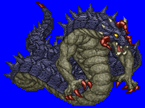
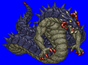
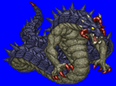
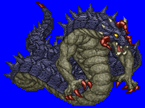

Height: ??? Weight: ???
Habitat: Sea Origin: Northern Europe
Meaning: Ancient Scandinavian for "ground snake"
Sometimes called "Jorumgand", this creation of the evil god Loki appears as a large snake. Its coming heralds Ragnarok, or the end of the world. As it awaits Ragnarok, it waits at the bottom of the sea, biding its time and gaining strength, eventually becoming large enough to cncompass the entire planet. When Ragnarok comes, it is told that the Midgard Serpent will aid the "Tengorok" giant race in conquering Asgard.